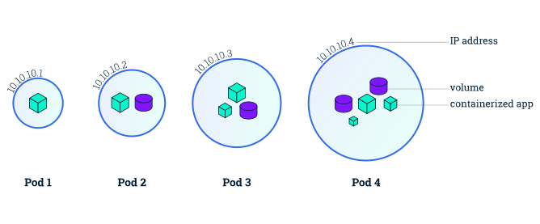
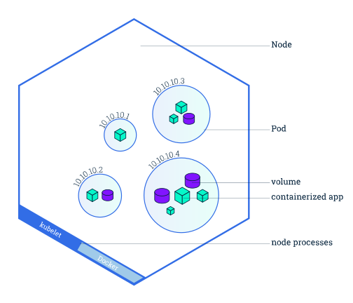

Objectives
- Learn about Kubernetes Pods.
- Learn about Kubernetes Nodes.
- Troubleshoot deployed applications.
Before you begin
The shell commands in this tutorial use POSIX shell syntax, which is
supported by the default shells on most Linux and macOS systems (for
example, bash, zsh, or sh). Windows users must use a POSIX-compatible
shell such as Windows
Subsystem for Linux (WSL) or Git Bash to run the commands as
written. Commands that use export, $(), and
similar constructs are not compatible with PowerShell
or the Windows Command Prompt.
Kubernetes Pods
Note:
A Pod is a group of one or more application containers (such as Docker) and includes shared storage (volumes), IP address and information about how to run them.
When you created a Deployment in Module 2, Kubernetes created a Pod to host your application instance. A Pod is a Kubernetes abstraction that represents a group of one or more application containers (such as Docker), and some shared resources for those containers. Those resources include:
- Shared storage, as Volumes
- Networking, as a unique cluster IP address
- Information about how to run each container, such as the container image version or specific ports to use
A Pod models an application-specific "logical host" and can contain different application containers which are relatively tightly coupled. For example, a Pod might include both the container with your Node.js app as well as a different container that feeds the data to be published by the Node.js webserver. The containers in a Pod share an IP Address and port space, are always co-located and co-scheduled, and run in a shared context on the same Node.
Pods are the atomic unit on the Kubernetes platform. When we create a Deployment on Kubernetes, that Deployment creates Pods with containers inside them (as opposed to creating containers directly). Each Pod is tied to the Node where it is scheduled, and remains there until termination (according to restart policy) or deletion. In case of a Node failure, identical Pods are scheduled on other available Nodes in the cluster.
Pods overview

Note:
Containers should only be scheduled together in a single Pod if they are tightly coupled and need to share resources such as disk.
Nodes
A Pod always runs on a Node. A Node is a worker machine in Kubernetes and may be either a virtual or a physical machine, depending on the cluster. Each Node is managed by the control plane. A Node can have multiple pods, and the Kubernetes control plane automatically handles scheduling the pods across the Nodes in the cluster. The control plane's automatic scheduling takes into account the available resources on each Node.
Every Kubernetes Node runs at least:
Kubelet, a process responsible for communication between the Kubernetes control plane and the Node; it manages the Pods and the containers running on a machine.
A container runtime (like containerd) responsible for pulling the container image from a registry, unpacking the container, and running the application.
Nodes overview

Troubleshooting with kubectl
In Module 2, you used the kubectl command-line interface. You'll continue to use it in Module 3 to get information about deployed applications and their environments. The most common operations can be done with the following kubectl subcommands:
kubectl get- list resourceskubectl describe- show detailed information about a resourcekubectl logs- print the logs from a container in a podkubectl exec- execute a command on a container in a pod
You can use these commands to see when applications were deployed, what their current statuses are, where they are running and what their configurations are.
Now that we know more about our cluster components and the command line, let's explore our application.
Check application configuration
Let's verify that the application we deployed in the previous
scenario is running. We'll use the kubectl get command and
look for existing Pods:
kubectl get podsIf no pods are running, please wait a couple of seconds and list the Pods again. You can continue once you see one Pod running.
Next, to view what containers are inside that Pod and what images are
used to build those containers we run the
kubectl describe pods command:
kubectl describe podsWe see here details about the Pod’s container: IP address, the ports used and a list of events related to the lifecycle of the Pod.
The output of the describe subcommand is extensive and
covers some concepts that we didn’t explain yet, but don’t worry, they
will become familiar by the end of this tutorial.
Note
The describe subcommand can be used to get detailed
information about most of the Kubernetes primitives, including Nodes,
Pods, and Deployments. The describe output is designed to be human
readable, not to be scripted against.
Show the app in the terminal
Recall that Pods are running in an isolated, private network - so we
need to proxy access to them so we can debug and interact with them. To
do this, we'll use the kubectl proxy command to run a proxy
in a second terminal. Open a new terminal window, and
in that new terminal, run:
kubectl proxyNow again, we'll get the Pod name and query that pod directly through
the proxy. To get the Pod name and store it in the POD_NAME
environment variable:
export POD_NAME="$(kubectl get pods -o go-template --template '{{range .items}}{{.metadata.name}}{{"\n"}}{{end}}')"
echo Name of the Pod: $POD_NAMETo see the output of our application, run a curl
request:
curl http://localhost:8001/api/v1/namespaces/default/pods/$POD_NAME:8080/proxy/The URL is the route to the API of the Pod.
Note
We don't need to specify the container name, because we only have one container inside the pod.
Executing commands on the container
We can execute commands directly on the container once the Pod is up
and running. For this, we use the exec subcommand and use
the name of the Pod as a parameter. Let’s list the environment
variables:
kubectl exec "$POD_NAME" -- envAgain, it's worth mentioning that the name of the container itself can be omitted since we only have a single container in the Pod.
Next let’s start a bash session in the Pod’s container:
kubectl exec -ti $POD_NAME -- bashWe have now an open console on the container where we run our NodeJS
application. The source code of the app is in the server.js
file:
cat server.jsYou can check that the application is up by running a curl command:
curl http://localhost:8080Note
Here we used localhost because we executed the command
inside the NodeJS Pod. If you cannot connect to
localhost:8080, check to make sure you have run the
kubectl exec command and are launching the command from
within the Pod.
To close your container connection, type exit.
What's next
- Tutorial Using A Service To Expose Your App.
- Learn more about Pods.
- Learn more about Nodes.